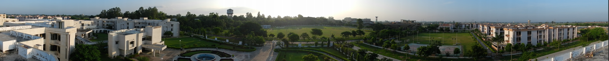

During the first ten years of its existence, a consortium of nine US universities (namely M.I.T, University of California, Berkeley, California Institute of Technology, Princeton University, Carnegie Institute of Technology, University of Michigan, Ohio State University, Case Institute of Technology and Purdue University) helped set up IIT Kanpur's research laboratories and academic programmes under the Kanpur Indo-American Programme (KIAP). The first Director of the Institute was P. K. Kelkar (after whom the Central Library was renamed in 2002).Under the guidance of economist John Kenneth Galbraith, IIT Kanpur was the first institute in India to offer Computer Science education. The earliest computer courses were started at IIT Kanpur in August 1963 on an IBM 1620 system. The initiative for computer education came from the Electrical Engineering department, then under the chairmanship of Prof. H.K. Kesavan, who was concurrently the chairman of Electrical Engineering and head of the Computer Centre. Prof. Harry Huskey of the University of California, Berkeley, who preceded Kesavan, helped with the computer activity at IIT-Kanpur. In 1971, the institute began an independent academic program in Computer Science and Engineering, leading to M.Tech. and Ph.D. degrees. In 1972 the KIAP program ended, in part because of tensions due to the U.S. support of Pakistan. Government funding was also reduced as a reaction to the sentiment that the IIT's were contributing to the brain drain.The Indian Institute of Technology Kanpur (commonly known as IIT Kanpur or IITK) is a public research college located in Kanpur, Uttar Pradesh. It was declared to be Institute of National Importance by Government of India under IIT Act.Established in 1959 as one of the first Indian Institutes of Technology, the institute was created with the assistance of a consortium of nine US research universities as part of the Kanpur Indo-American Programme (KIAP).
